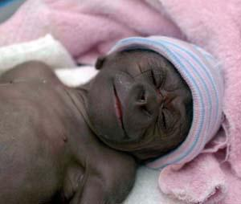

Biología. Investigadores han observado procedimientos moleculares que mantienen diferenciadas a las especies, obstaculizando o impidiendo el cruce a través del aislamiento reproductivo.

Los han llamado quimeras; experimentos en embriología que cruzan dos especies distintas para producir un híbrido entre ambas. Y uno que despierta el interés de todos es el cruce entre un humano y un chimpancé, el famoso humancé, un hipotético animal que sería el resultado de una experimentación poco ética y cuyo estudio ha interesado a los biólogos evolutivos del mundo por su evidente vínculo con la evolución de las especies y la genética.
Ciertamente, el tema de la especiación, o cómo las especies se mantienen distintas unas de otras, ha sido bastante estudiado. En la naturaleza vemos que si una especie se empareja con otra, los híbridos que nacen de ellas no sobreviven o nacen estériles. Estos animales y organismos proveen a los investigadores con pistas sobre este proceso de especiación que mantiene separadas a las especies en sus distintas categorías e impide u obstaculiza el cruce entre ellas en lo que se conoce como un aislamiento reproductivo.
Pues bien, a nivel molecular, los investigadores nos explican que una de las causas que impide este cruce es el resultado de un mal emparejamiento de genes que daña el funcionamiento de los mismos.
“Podemos hablar de varias formas de este tipo de incompatibilidad genética, una de ellas es el desajuste de genes en el núcleo y de otros en la mitocondria celular que es vital en la respiración celular, en ese proceso en que las células producen energía”, explica el doctor Jun-Yi Leu, investigador en el Instituto de Biología Molecular en la Academia Sinica en Taiwán.
El equipo del doctor Leu, cuyos resultados serán publicados en el diario científico PLoS Biology, ha identificado tres genes en distintas pero cercanas especies de levadura que causan esterilidad y que podrían explicar mejor cómo las especies desarrollan mecanismos para permanecer claramente distintas unas de otras.
El equipo de Leu en Sinica ya había estudiado estos desfases genéticos que impiden el cruce efectivo entre especies. De hecho, ya habían observado que un mal emparejamiento mitocondrial-nuclear causa la esterilidad híbrida entre dos especies de levadura.
“Lo que nos propusimos determinar en este nuevo estudio fue si la incompatibilidad citonuclear es una causa común del aislamiento reproductivo en la levadura. Para ello, investigamos híbridos en la levadura de pan (Saccharomyces cerevisia), cruzados con otras dos especies de levadura, ya sea S. bayanus o S. paradoxus”.
Los investigadores descubrieron mecanismos ligados con los genes y su producción de proteínas, cuyos desfases y malos emparejamientos obstaculizan el cruce entre las especies.
El efecto de eliminar un intrón
“Los resultados de nuestras investigaciones nos enseñan que la mayoría de los poros híbridos padecían de deficiencias respiratorias, lo que indica la incompatibilidad citonuclear”, explica Leu.
Una vez observado el mecanismo defectuoso, los investigadores continuaron en la identificación del gen responsable: MRS1. Esta unidad genética posee el código para producir una proteína del mismo nombre que es requerida para eliminar un intrón.
Pero vamos por pasos. Un intrón es una región del ADN que no se convierte en proteína y que generalmente son eliminadas del genoma. Pues bien, la proteína Mrs1, que se necesita para eliminar ese intrón del gen Cox1, y un gen conocido como Aim22 que sí codifica para producir proteínas, fueron los responsables del mal emparejamiento genético que impide que los híbridos reproduzcan.
En busca de sus raíces
Para estudiar la evolución de esta incompatibilidad de caracteres genéticos, los científicos se lanzaron a estudiar los aminoácidos. Allí observaron que tres de estas moléculas son suficientes para producir proteínas Mrs1 que son incompatibles en híbridos.
“También descubrimos una relación ‘coevolutiva’ entre Mrs1 y Cox1 ya que el cambio funcional de la primera siempre está acompañado por un cambios en los intrones de Cox1. Estos resultados sugieren que la incompatibilidad citonuclear se alcanza a través de múltiples mecanismos moleculares y que potencialmente representa un mecanismo general de reproducción aislada en especies de levadura. Será interesante saber si tal incompatibilidad a nivel molecular también se presenta en otros organismos”, dijo el autor.
Volver a Noticias
Comentarios
Comments powered by Disqus